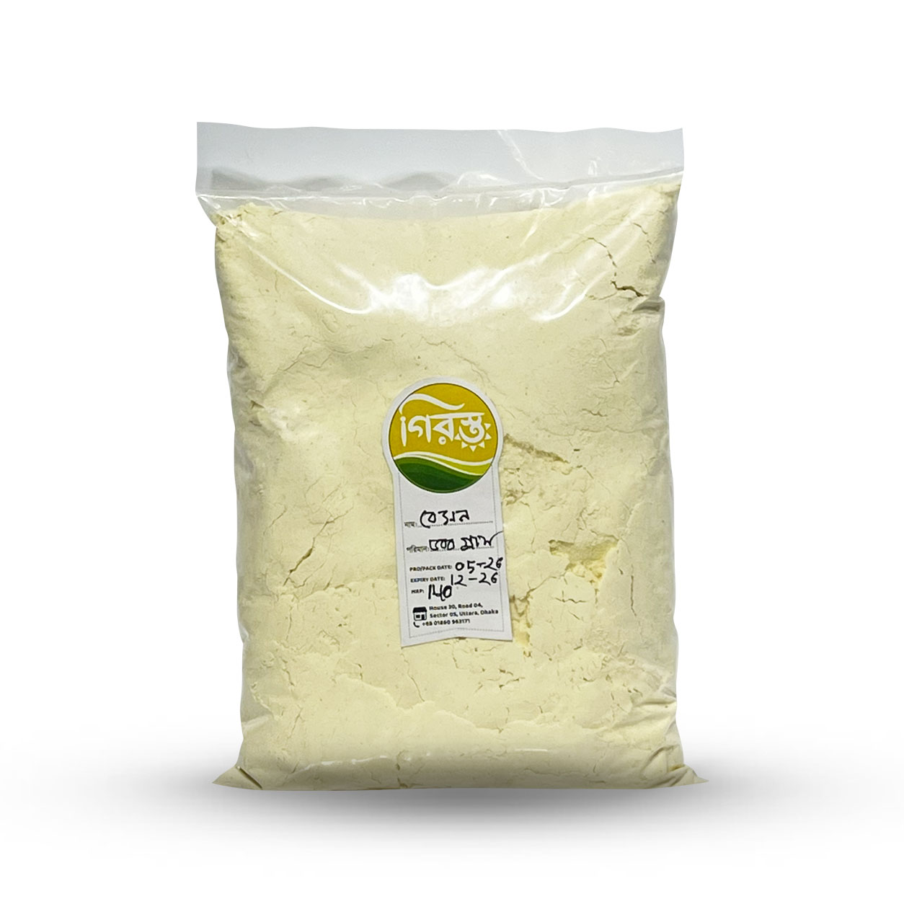

Girosto Special
বুটের ডালের বেসন | Girosto
SKU: GIR-113
পেঁয়াজু, বেগুনি, ফুলুরি থেকে শুরু করে হালুয়া আর চিলা—বেসন ছাড়া বাঙালির রান্নাঘর যেন অসম্পূর্ণ। আর বেসন যদি হয় বুটের ডাল থেকে তৈরি, তাহলে স্বাদ, ঘ্রাণ আর রান্নার ফলাফল দুটোই আলাদা মাত্রা পায়। প্রতিদিনের ভাজাভুজি কিংবা মিষ্টি—সবকিছুর জন্য Girosto -এর বুটের ডালের বেসন হতে পারে ভরসার একটি সংগ্রহ।
৳140
Product availability, appearance, and delivery time may vary. Contact Girosto if you need sourcing or ingredient details.
এই বেসনের মূল উপাদান শুধু বুটের ডাল। একটি মিহি ও শুকনো গুঁড়া, যা পানি বা দুধের সঙ্গে সহজে মিশে মসৃণ ব্যাটার তৈরি করে। তাই ঝটপট নাশতা বানাতে চান কিংবা উৎসবের মিষ্টি—দুই ক্ষেত্রেই এটি কাজে আসে। অন্যান্য ডাল ও গুঁড়া মসলার পণ্য দেখতেও ঘুরে আসতে পারেন আমাদের শপ থেকে।
- পণ্যের নাম: বুটের ডালের বেসন
- পণ্যের ধরন: মিহি ডালের গুঁড়া (বেসন)
- প্রধান উপাদান: বুটের ডাল
- ব্যবহার: ভাজাভুজি, মিষ্টি, চিলা, কড়ি ও ঘরোয়া রান্না
- ব্র্যান্ড: Girosto Special
বুটের ডালের বেসনের বিশেষ বৈশিষ্ট্য
বুটের ডালের বেসনের বড় সুবিধা হলো এটি একই সঙ্গে ভাজা ও মিষ্টি—দুই ধরনের খাবারেই কাজ করে। ব্যাটার তৈরি করলে এটি খাবারের গায়ে হালকা আবরণ দেয়, ভাজলে বাইরেটা মচমচে হয়, আর ডালের নিজস্ব সুবাস খাবারে আলাদা স্বাদ যোগ করে।
- শুধু বুটের ডাল থেকে তৈরি
- মিহি গুঁড়া, তাই ব্যাটারে সহজে মেশে
- পেঁয়াজু, বেগুনি ও ফুলুরির জন্য উপযোগী
- হালুয়া, লাড্ডু ও চিলার মতো পদেও ব্যবহারযোগ্য
- মাছ বা সবজিতে মাখিয়ে ভাজার জন্য সুবিধাজনক
- স্বভাবগতভাবে গমের আটা ছাড়া তৈরি একটি উপাদান
বুটের ডালের বেসনের উপাদান
এতে অন্য কোনো মিশ্রণের কথা বলা হয়নি, অর্থাৎ বেসনের স্বাদ আসে সরাসরি ডাল থেকেই। তাই নিজের পছন্দমতো লবণ, মরিচ, জিরা বা পেঁয়াজ যোগ করে স্বাদের মাত্রা নিজের হাতে ঠিক করা যায়।
কেন বুটের ডালের বেসন বেছে নেবেন?
বাজারে বেসন অনেক রকম পাওয়া যায়, কিন্তু রান্নার সময় যা সবচেয়ে বেশি গুরুত্বপূর্ণ তা হলো গুঁড়ার মিহিভাব, ঘ্রাণ আর ব্যাটারে মিশে যাওয়ার ক্ষমতা। এই তিনটি দিক ভেবেই আমরা এই বেসন আপনার সামনে রাখছি।
১. একটিমাত্র উপাদান
বুটের ডাল ছাড়া এতে অন্য কিছুর উল্লেখ নেই। ফলে ভাজাভুজিতে কী যোগ হবে, তা আপনার নিয়ন্ত্রণেই থাকে।
২. মিহি গুঁড়া, মসৃণ ব্যাটার
বেসনের দানা মিহি হলে ব্যাটারে দলা কম পড়ে। তাতে বেগুনি বা পেঁয়াজু ভাজার সময় সমান আবরণ পাওয়া যায়।
৩. নোনতা ও মিষ্টি—দুই ধরনের রান্নায় ব্যবহার
একই প্যাকেট দিয়ে বিকেলের ভাজাভুজি যেমন হয়, তেমনি বেসনের হালুয়া বা লাড্ডুর মতো মিষ্টিও বানানো যায়।
৪. ঘরোয়া নাশতার জন্য সুবিধাজনক
অতিথি এলে বা হঠাৎ কিছু মুখরোচক খেতে ইচ্ছে হলে পেঁয়াজ, কাঁচামরিচ আর বেসন দিয়েই কয়েক মিনিটে নাশতা তৈরি করা যায়।
৫. অনলাইনে সহজে অর্ডার
ঘরে বসেই অর্ডার করতে পারবেন, আর বর্তমান মূল্য ও প্যাক সাইজ অর্ডারের আগে পণ্য পেজেই দেখে নেওয়া যাবে।
বুটের ডালের বেসনের পুষ্টিগুণ
বুটের ডাল প্রোটিন ও খাদ্যআঁশের একটি পরিচিত উৎস। তাই বুটের ডাল থেকে তৈরি বেসনও সাধারণত প্রোটিন ও ফাইবারে সমৃদ্ধ খাবারের তালিকায় ধরা হয়। তবে মোট পুষ্টিমান নির্ভর করে আপনি বেসন দিয়ে কী বানাচ্ছেন এবং তাতে কতটা তেল, চিনি বা ঘি ব্যবহার করছেন, তার ওপর।
গরম তেলে ভাজা খাবারে ক্যালরি ও তেলের পরিমাণ বেড়ে যায়। তাই সুষম খাদ্যতালিকার অংশ হিসেবে পরিমিত পরিমাণে খাওয়াই ভালো। এই পণ্যকে কোনো রোগের চিকিৎসা হিসেবে বিবেচনা করা উচিত নয়। ডায়াবেটিস, উচ্চ রক্তচাপ বা হৃদ্রোগের মতো অবস্থায় খাবার বাছাইয়ের আগে চিকিৎসক বা পুষ্টিবিদের পরামর্শ নেওয়া জরুরি।
বুটের ডালের বেসনের স্বাদ ও ঘ্রাণ কেমন?
কাঁচা অবস্থায় বেসনের হালকা মাটির মতো ঘ্রাণ থাকে। তেলে ভাজলে বা ঘি-তে ভাজলে সেই ঘ্রাণ মিষ্টি ও বাদামি সুবাসে বদলে যায়। বেসনের হালুয়ায় এই ভাজা ঘ্রাণই আসল আকর্ষণ, আর নোনতা ভাজায় এটি মচমচে আবরণের সঙ্গে ডালের নিজস্ব স্বাদ যোগ করে।
বুটের ডালের বেসন দিয়ে কী কী রান্না করা যায়?
- পেঁয়াজু ও বেগুনি
- ফুলুরি ও আলুর চপের আবরণ
- সবজি, মাছ বা চিংড়ি ভাজার প্রলেপ
- বেসনের চিলা (নোনতা প্যানকেক)
- বেসনের হালুয়া ও লাড্ডু
- কড়ি বা টক-দইয়ের ঝোলের ঘন ব্যাটার
- ঝুরি ভাজা ও বুন্দিয়ার মতো মুচমুচে নাশতা
বেসন দিয়ে সহজে পেঁয়াজু বানানোর টিপস
প্রথমে একটি পাত্রে পরিমাণমতো বেসন নিন। তার সঙ্গে কুচানো পেঁয়াজ, কাঁচামরিচ, ধনেপাতা, লবণ ও সামান্য জিরা গুঁড়া মেশান। এরপর অল্প অল্প করে পানি দিয়ে ঘন ব্যাটার তৈরি করুন। পানি একবারে ঢাললে দলা বেঁধে যেতে পারে, তাই ধীরে ধীরে মেশানোই ভালো।
মচমচে ভাব বেশি চাইলে ব্যাটারে এক-দুই চা-চামচ চালের গুঁড়া যোগ করতে পারেন। মাঝারি আঁচের গরম তেলে ছোট ছোট অংশে ছেড়ে সোনালি রং না আসা পর্যন্ত ভাজুন।
বুটের ডালের বেসন সংরক্ষণের নিয়ম
- ঠান্ডা ও শুকনো স্থানে রাখুন।
- সরাসরি রোদ ও আর্দ্রতা থেকে দূরে রাখুন।
- প্যাকেট খোলার পর বায়ুরোধী কৌটায় ঢেলে রাখুন।
- সবসময় শুকনো চামচ ব্যবহার করুন।
- বর্ষার সময় বেশি সতর্ক থাকুন, কারণ আর্দ্রতায় গুঁড়ায় দলা বা গন্ধ হতে পারে।
- প্যাকেটে উল্লেখিত মেয়াদের মধ্যে ব্যবহার করুন।
কারা বুটের ডালের বেসন খেতে পারেন?
সাধারণ খাদ্যাভ্যাসের অংশ হিসেবে প্রাপ্তবয়স্করা এটি রান্নায় ব্যবহার করতে পারেন। তবে যাদের ছোলা বা অন্য ডালজাতীয় খাবারে অ্যালার্জি আছে, তাদের এটি এড়িয়ে চলাই নিরাপদ। বেসন স্বভাবগতভাবে গমের আটা নয়, কিন্তু আপনার যদি সিলিয়াক রোগ বা কঠোর গ্লুটেন-নিয়ন্ত্রিত খাদ্যাভ্যাস থাকে, তাহলে প্যাকেটের লেবেল ও প্রস্তুত প্রক্রিয়া সম্পর্কে আগে নিশ্চিত হয়ে নিন।
শিশুদের জন্য খাবার বানানোর সময় তেলের পরিমাণ ও মসলার ঝাল কম রাখুন। নির্দিষ্ট স্বাস্থ্যগত সমস্যা থাকলে চিকিৎসকের পরামর্শ নিন।
কেন Girosto থেকে বুটের ডালের বেসন কিনবেন?
Girosto দৈনন্দিন রান্নার জন্য উপাদান, স্বাদ আর ব্যবহারিক সুবিধার দিকে নজর রেখে পণ্য বাছাই করে। যারা ঘরে বসে সহজে রান্নার মূল উপকরণ পেতে চান, তাদের জন্য এই বেসন হতে পারে সুবিধাজনক একটি পছন্দ।
- বাছাইকৃত ডালের গুঁড়া
- উপাদান সম্পর্কে স্পষ্ট তথ্য
- নোনতা ও মিষ্টি—দুই ধরনের রান্নায় ব্যবহারযোগ্য
- যত্ন করে প্যাক করা
- অনলাইনে সহজে অর্ডার
- সারা বাংলাদেশে ডেলিভারি সুবিধা ( বিস্তারিত জানতে ডেলিভারি নীতি দেখুন )
বুটের ডালের বেসন স্পেসিফিকেশন
| বিষয় | বিস্তারিত |
|---|---|
| পণ্যের নাম | বুটের ডালের বেসন |
| পণ্যের ধরন | মিহি ডালের গুঁড়া |
| প্রধান উপাদান | বুটের ডাল |
| ব্যবহার | ভাজাভুজি, মিষ্টি, চিলা, ঘরোয়া রান্না |
| প্যাক সাইজ | ৫০০ গ্রাম |
| সংরক্ষণ | ঠান্ডা, শুকনো ও বায়ুরোধী পাত্রে |
| ব্র্যান্ড | Girosto Special |
বুটের ডালের বেসন সম্পর্কে সাধারণ প্রশ্ন
বুটের ডালের বেসন কী?
বুটের ডাল ভেঙে মিহি গুঁড়া করে যে বেসন তৈরি করা হয়, সেটিই বুটের ডালের বেসন। এটি পেঁয়াজু, বেগুনি, হালুয়া, চিলা ও আরও নানা রান্নায় ব্যবহার করা হয়।
বেসন আর ময়দা কি একই জিনিস?
না। ময়দা তৈরি হয় গম থেকে, আর বেসন তৈরি হয় ডাল থেকে। দুটির স্বাদ, রং ও রান্নায় আচরণ আলাদা।
বেসনের ব্যাটারে দলা পড়লে কী করব?
পানি অল্প অল্প করে মেশান এবং হুইস্ক বা চামচ দিয়ে একই দিকে ভালোভাবে নাড়ুন। ব্যাটার তৈরির পর পাঁচ-দশ মিনিট ঢেকে রাখলে সেটি আরও মসৃণ হয়।
বেসন কি ত্বকে ব্যবহার করা যায়?
ঐতিহ্যগতভাবে অনেকে ত্বক পরিষ্কার করার জন্য বেসনের প্রলেপ ব্যবহার করেন। তবে এই পণ্যটি মূলত রান্নার জন্য। ত্বকে লাগানোর আগে হাতের ছোট একটি অংশে পরীক্ষা করে দেখুন, আর অস্বস্তি হলে ব্যবহার বন্ধ করুন।
বেসন কি ভাজার আগে ভেজে নিতে হয়?
পেঁয়াজু বা বেগুনির ব্যাটারের জন্য ভাজার প্রয়োজন নেই। তবে হালুয়া ও লাড্ডুর জন্য বেসন ঘি বা তেলে হালকা আঁচে ভেজে নিলে কাঁচা গন্ধ কেটে যায় এবং সুবাস বাড়ে।
ডায়াবেটিস রোগীরা কি বেসন খেতে পারবেন?
এটি ডায়াবেটিসের চিকিৎসা বা বিশেষ মেডিকেল খাবার নয়। বেসন দিয়ে কী রান্না হচ্ছে, কতটা তেল বা চিনি যোগ হচ্ছে এবং কতটা খাওয়া হচ্ছে, এসবই গুরুত্বপূর্ণ। তাই চিকিৎসক বা পুষ্টিবিদের পরামর্শ অনুযায়ী পরিমাণ ঠিক করুন।
বেসন কীভাবে সংরক্ষণ করতে হবে?
ঠান্ডা ও শুকনো জায়গায় বায়ুরোধী কৌটায় রাখুন। ভেজা চামচ ব্যবহার করবেন না এবং সরাসরি রোদ থেকে দূরে রাখুন।
বুটের ডালের বেসন কোথায় কিনতে পাওয়া যাবে?
Girosto-এর ওয়েবসাইট থেকে বুটের ডালের বেসন অনলাইনে অর্ডার করা যাবে। অর্ডারের সময় বর্তমান মূল্য, প্যাক সাইজ ও স্টক যাচাই করে নিন।